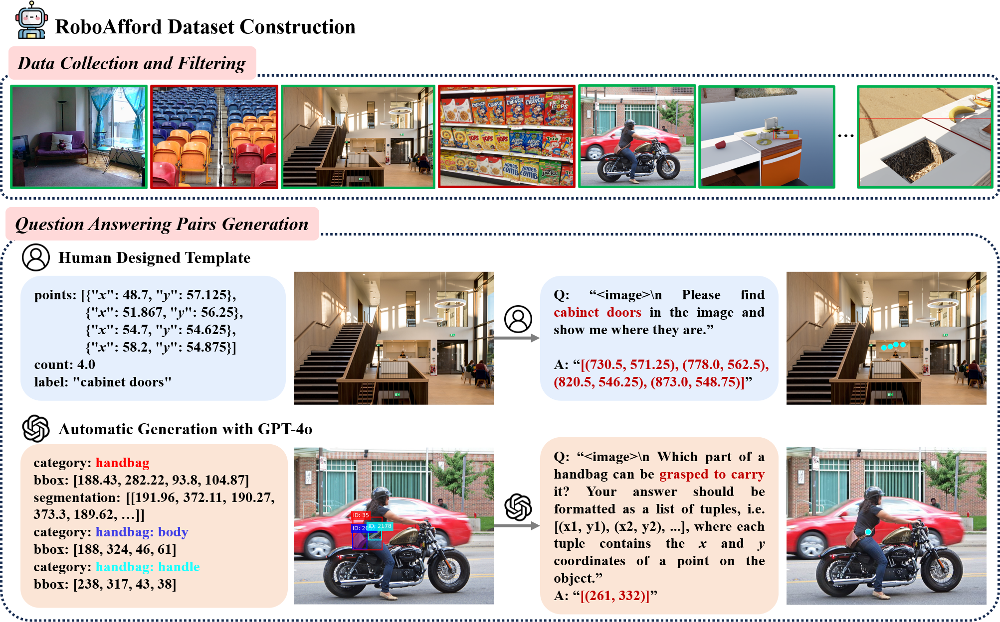

Dataset Construction
Pipeline for constructing the RoboAfford dataset. We first discard the image with densely repeated objects, and then generate question answering pairs using human designed template or GPT-4o.
Robot manipulation is a fundamental capability of embodied intelligence, enabling effective robot interactions with the physical world. In robot manipulation tasks, predicting precise grasping positions and object placement is essential. Achieving this requires object recognition to localize target object, predicting object affordances for interaction and spatial affordances for optimal arrangement. While Vision-Language Models (VLMs) provide insights for high-level task planning and scene understanding, they often struggle to predict precise action positions, such as functional grasp points and spatial placements. This limitation stems from the lack of annotations for object and spatial affordance data in their training datasets.
To address this gap, we introduce RoboAfford, a novel large-scale dataset designed to enhance object and spatial affordance learning in robot manipulation. Our dataset comprises 819,987 images paired with 1.9 million question answering (QA) annotations, covering three critical tasks: object affordance recognition to identify objects based on attributes and spatial relationships, object affordance prediction to pinpoint functional grasping parts, and spatial affordance localization to identify free space for placement. Complementing this dataset, we propose RoboAfford-Eval, a comprehensive benchmark for assessing affordance-aware prediction in real-world scenarios, featuring 338 meticulously annotated samples across the same three tasks. Extensive experimental results reveal the deficiencies of existing VLMs in affordance learning, while fine-tuning on the RoboAfford dataset significantly enhances their affordance prediction in robot manipulation, validating the dataset's effectiveness. The dataset, benchmark and evaluation code will be made publicly available to facilitate future research.
Pipeline for constructing the RoboAfford dataset. We first discard the image with densely repeated objects, and then generate question answering pairs using human designed template or GPT-4o.
Obj-Aff: Object Affordance. Spa-Aff: Spatial Affordance.
Our RoboAfford-Qwen Framework. We fine-tune the model on the RoboAfford dataset to enhance object and spatial affordance capabilities. For robotic manipulation, we use depth information to transform 2D points representing objects and spatial affordances into 3D coordinates, which are then converted to end-effector positions for robotic manipulation.
Qualitative results of RoboAfford-Qwen, where cyan points indicate the object and spatial affordances.
Results of deploying RoboAfford-Qwen to downstream robotic manipulation tasks.
The datasets and benchmarks are under the Creative Commons Attribution 4.0 International License.